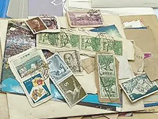
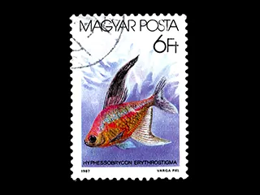
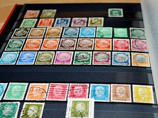
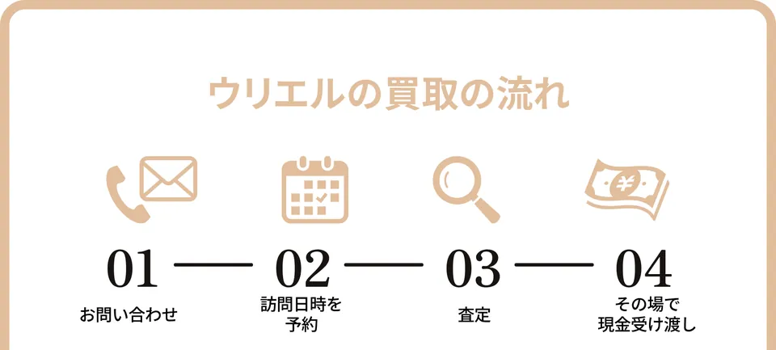
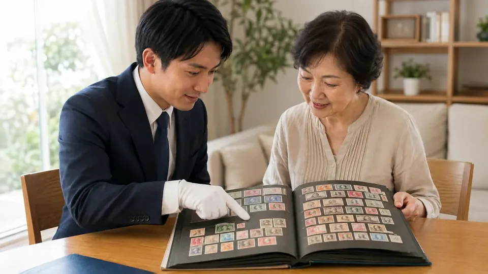

【最新】
PR本ページは
ウリエルの切手買取
実家の
仕分けず
特徴
- 満足度
93.29%※1 - 最短翌日に
自宅で査定 - その場で
現金払い - 手数料・
キャンセル料0円

画像：ウリエル
ウリエルは、
| 買取対象 | 出張エリア |
|---|---|
| 記念・ | 関東・ |
| 買取方法 | 費用 |
| 出張・ | 出張料・ |
| 受付時間 | 支払い |
| 24時間※年末年始を | その場で |
出典：ウリエル公式 切手買取ページ・
24時間受付・
無料査定を

買取金額
ウリエルの
確認1数字で見るウリエル
- 査定員対応満足度93.29%※1
- 年間買取点数15万点以上※2
- 創業年数15年以上※3
※1 自社
運営母体の
確認2 仕分け前・状態の悪い切手もそのまま
ウリエルは




買取可能な
- 記念切手
- 特殊切手
- ふるさと
切手 - 年賀切手
- 鳥切手
- 桜切手
- 菊切手
- 軍事切手
- 青島軍事切手
- 戦前切手
- 竜文切手
- 旧小判切手
- 新小判切手
- プレミア切手
- 月に雁
- 見返り美人
- 赤猿切手
- 中国切手
- 毛沢東切手
価値が
無料査定を
確認3 最短翌日に自宅で査定、
その場で現金
その場で
電話・

ウリエルの
- 出張買取：出張料
無料。 その場で 現金買取、 その場での 追加もOK - 店舗買取：対面で
相談・ 交渉でき、 その場で 現金買取 - 催事買取：予約不要、
個別対応で その場で 現金買取

最短翌日に
確認4 公式掲載の買取実績
横に
買取実績1

| 品目 | 毛沢東関連 |
|---|---|
| 買取価格 | 200,000円 |
| 買取日 | 2021/09/11 |
買取実績2

| 品目 | 赤猿切手を |
|---|---|
| 買取価格 | 150,000円 |
| 買取日 | 2021/12/15 |
買取実績3

| 品目 | 月に雁切手などの |
|---|---|
| 買取価格 | 120,000円 |
| 買取日 | 2024/05/06 |
買取実績4

| 品目 | 桜切手などの |
|---|---|
| 買取価格 | 100,000円 |
| 買取日 | 2021/12/26 |
| 備考 | キャンペーン期間中の |
買取実績5

| 品目 | 竜文切手を |
|---|---|
| 買取価格 | 65,000円 |
| 買取日 | 2023/09/26 |
買取実績6

| 品目 | 立太子礼記念 |
|---|---|
| 買取価格 | 50,000円 |
| 買取日 | 2024/05/19 |
買取実績7

| 品目 | 見返り美人切手など |
|---|---|
| 買取価格 | 30,000円 |
| 買取日 | 2024/01/13 |
写真・
手数料・
無料査定を
確認5 公式掲載の利用者の声
 60代女性埼玉県
60代女性埼玉県さいたま市 寄り
添ってくれて、 とても 売りやすかったです
知人にすすめられて 利用しました。 最初は 緊張しましたが、 聞いていた とおり対応が とても 良く、 話も しっかり 聞いて もらえました。 気持ちに 寄り 添ってくれる 担当の 方で、 安心して 売却を 任せられました。  40代男性埼玉県蓮田市
40代男性埼玉県蓮田市頼まれて
売った 切手が 驚きの値段に
父が子どもの 頃から 集めていた 切手が、 かなりの 数ありました。 高齢に なった 父に 「売ってくれ」と 頼まれ、 ウリエルさんに お願いしました。 私は 切手に 詳しく ありませんが、 珍しい 切手が あったようで、 こんなに 高く 売れるとは 知りませんでした。 父も 喜んでいます。  70代男性千葉県船橋市
70代男性千葉県船橋市片付けで
出てきた 切手が 思いの ほか 高く 売れました
蔵を片付けていたら、 中国の 切手が いく つか 出てきました。 捨て ようかとも 思いましたが、 息子に 買取を すすめられて 問い合わせた ところ、 珍しい 切手だったようで 高い 値段で 売れました。
※各社の
確認6 申込前のチェックとよくある質問
申し込む前に
- 切手は
仕分けず、 アルバムや 箱に 入ったままで OK - 訪問してほしい
日時の 候補 （最短翌日から 相談できます） - 本人確認書類
（運転免許証・ パスポート・ マイナンバーカード など） - 切手以外に
見てほしい 品物が あれば メモしておく （その場で 追加OK） - 成約後
8日以内は クーリング・オフが できること
手元の切手の価値が分からなくても査定してもらえますか？
大丈夫です。
アルバムから切手を外してから申し込んだ方がいいですか？
外さなくて
査定だけでお金はかかりますか？
かかりません。
売ったあとで考え直したくなったら？
出張買取で
24時間受付・
無料査定を